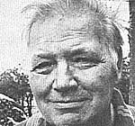
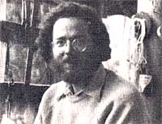

In celebration of little-known MOTHER-type folks from all over.
In July of 1980 Martin Jopp-one of the nation's most respected authorities on wind energy-passed away. Martin began producing wind-powered generators during the 1930's ... and when America's two largest manufacturers of wind equipment-Jacobs Wind Electric and the Wincharger Corporation-went out of business in the 1950's, Jopp promptly bought up the majority of the companies' machinery and incorporated it into his own shop.
People from all over the country contacted the wind pioneer for parts and advice ... in fact, folks often made "pilgrimages" to Martin's home (outside of Princeton, Minnesota) to observe the ingenious setup that still remains on his property today: Electricity is supplied by two 3,000-watt windplants, which can be monitored by a battery-bank control panel that provides such information as the speed of the wind, its direction, and the number of watts and volts being produced. In addition, convertors switch the generators' current from DC to AC, and a circuit-breaker system allows only half the batteries in the bank to be charged when the wind is low.
Just over three years ago, Jopp was honored by Minnesota's former governor, Rudy Perpich ... when the statesman pronounced August 27, 1977 to be "Martin Jopp Day". The declaration was a way of giving thanks (that we should all share in) for Martin's many contributions to the development of energy alternatives ... and was a tribute to "his genius, his warmth, and his foresight in realizing that energy is a precious gift to be cherished".- JoelStottrup.
In 1989 Allentown, Pennsylvania psychiatrist Stephen Barrett formed the Lehigh Valley Committee Against Health Fraud, Inc.... a non-profit organization that has exposed and publicized countless swindles. "Very few people realize how often or how skillfully they're being cheated," says Dr. Barrett. "My guess is that Americans are wasting $10 billion a year on questionable health practices."
According to Barrett-who has edited a book called The Health Robbers: How to Protect Your Money and Your Life ($12.95, George F. Stickley Co.) and Co authored a volume entitled Consumer Health: A Guide to Intelligent Decisions ($12.95, C.V. Mosby Co.)-some of the more common frauds have included sex aids, hair analyses, fad diets, and spot reducers. The way to eliminate such deception, stresses the doctor, is to increase public awareness of the problem and solicit support for stricter healthcare laws. For further information, write (including a dollar or two to cover costs) the Lehigh Valley Committee Against Health Fraud, Dept. TMEN, P.O. Box 1802, Allentown, Pennsylvania 18105.- Maury M. Breecher.
A Pew years ago, Bob Coe began handcrafting boats from the native woods of Washington state's San Juan Islands. Bob focused his efforts on the production of two designs-the Whitehall, a swift and seaworthy rowing craft ... and the Swampscott dory, a lightweight sailing/rowing combination-since he thought that both excelled in four important areas: transportation, recreation, energy conservation, and aesthetics.
Coe's hobby soon grew into a prosperous enterprise, as area residents learned about the artisan's handsome wind- and muscle-powered vessels. Because Bob's community has no electricity, the craftsman makes minimal use of power equip. ment ... a small generator system supplies the little energy he needs.
Bob's beautiful wooden creations provide a sharp contrast to the more common chrome and plastic floating craft. And, If Coe's business continues its current rate of growth, his energy-saving pollution fighters may eventually clear San Juan waterways of gasoline fumes and roaring engines!- Winnie Adams.
Thomas Lapworth had partially constructed a three-bedroom solar home that would have no backup heating system, when Los Angeles County inspectors took him to court. According to officials, Lapworth had failed to acquire the proper permits for the construction of his home ... but Tom was quick to point out that-since the county's building code had no provisions for structures without gas, oil, or other "conventional" heating sources-his permit requests had been repeatedly denied. Nevertheless, a jury in Newhall Municipal Court deliberated less than half an hour before convicting the builder ... who was levied a fine of $320.
Meanwhile, Los Angeles County Supervisor Baxter Ward became aware of the case and brought the problem to the attention of the Board of Supervisors. The group agreed to allow the county to grant 100 building-code exceptions, per year, for experiments in energy-conservation construction ... and Thomas Lapworth was among the first to apply!- Rich Varenchik.
Following a moratorium on the aerial spraying of herbicides in Ashford, Wash, ington-initiated as a result of actions taken by members of an organization called the SUCCOTASH ALLIANCE (see issue 64's Profile of Bonnie Hill for a report on the efforts of a similar group)-chemical sprayings in that region have resumed. The EPA claims that its investigations showed no correlation between the use of herbicides and the rate of miscarriages in the area ... despite the tact that out of 12 pregnancies during previous sprayings, nine resulted in spontaneous abortion, one baby was stillborn, and another infant died of a heart defect 16 days after birth!
For the past eight years JIM and MAUREEN WALLACE of Colville, Washington have been researching a possible alternative to refined sugar: the African berry Synsepalum dulcificum. Though a commercially produced concentrate made from the fruit-which causes sour foods to taste sweet-has been denied GRAS (generally recognized as safe) status by the FDA pending further testing, the plant itself (commonly called Miracle Fruit) can be purchased from the Whitman Rare Fruit Nursery, Dept. TMEN, 23430 S.W. 122nd Avenue, Princeton, Florida 33032.
DWIGHT L. BARR of San Diego, California has developed a lightweight convertible tent that bolts onto the roof of any family automobile or camper. The protective covering can be set up in only 15 seconds' time and-when used on a large enough vehicle-will keep as many as five people off the cold and wet ground.
TED HANSEN knows a sure-fire way to get youngsters to eat their vegetables: He makes the produce into ice cream. Hansen's San Francisco eatery carries 14 different flavors of the nutritious frozen dessert ... including avocado, carrot, sweet corn, and beet.-JV.
|
 PHOTOS BY THE AUTHOR |
 PHOTOS BY THE AUTHOR |
|